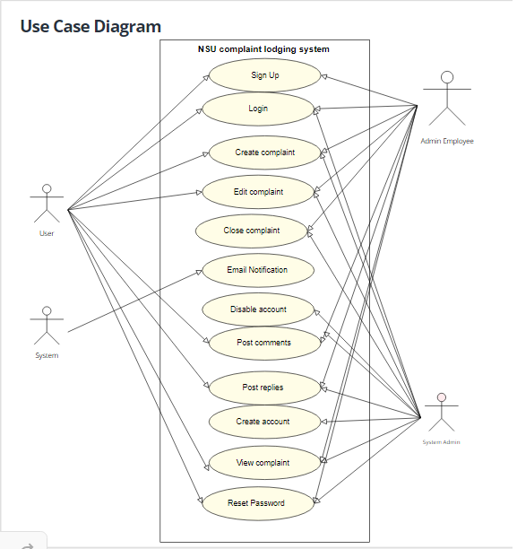
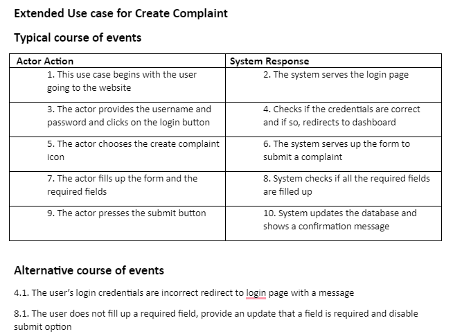

1. Introduction
The introduction of the Software Requirements Specification (SRS) provides an overview of the entire SRS with purpose, scope, references, and an overview of SRS where the product details are specified. The detailed requirements of the NSU complaints system are provided in this document.
1.1 Purpose
The software requirements specified in the document are for a Complaint Lodging system for North South University. This is the first release of the software. This SRS covers the entire product requirements. This SRS contains the product description for the entire system and this SRS will be followed by an SDS. However, there might be revisions to this SRS once a deeper understanding of the problem is achieved.
1.2 Document Conventions
The standard convention that will be followed when writing this SRS is that standard Arial font will be used when writing this. Text that is in italics will be used to indicate special information. The words in bold will either be heading for various segments of this document or keywords that will be explained. Every requirement statement will have its own priority that will be stated. All titles for figures or diagrams will be in italics. Main Topics: Font Name: Arial, Font Style: Bold, Size: 11 Sub Topics: Font Name: Calibri, Font Style: Bold, Size: 14 Other Explanations: Font Name: Calibri, Font Style: Normal, Size: 12
1.3 Intended Audience and Reading Suggestions
This document is intended for the use of developers, project managers, business analysts, users, testers, and documentation writers. The SRS contains an overview of the product, External Interface Requirements, System Features, performance requirements, and additional requirements.SRS will provide readers with a better understanding of the finer details of this project. By understanding the project, business analysts will be able effectively to communicate with the developers and the clients. The document is written in simple English for a wide range of audiences. The developer team will be most benefited from the document as with will work as a guide for the entire project. In order to read this document, the reader should begin from the overall description of the product and move sequentially according to the table of contents for a detailed understanding of the product. However, the most pertinent segments are the Design and implementation segments and the user classes segment which provides an understanding of the design of the software. Alongside that, the system features segments is essential to cross-check if the clients' requirements are met.
1.4 Product Scope
This software is for in-house use for the employees and students of North South University. This system allows for a smooth complaint lodging system for students, faculty members, and staff through a website application and an Android application. Its purpose is to enable a smooth and efficient system that addresses all complaints and ensures greater efficiency in reaching the desired person who needs to process the complaint. The benefit of this system is that it replaces the need for people to individually send emails for sending a complaint where follow-ups and additional updates are difficult to visualize. One of the key benefits is that this platform organizes the complaints therefore saves time and money. The objective of the system is to implement a hassle-free complaint lodging system for all parties involved in North South University. This software is largely not used for business purposes but rather for providing a service on behalf of North-South University. The business goal to be achieved from this implementation is a provide a good user experience for students and their employees.
1.5 References
The template that has been provided by our course instructor was used as the basis for this document. The link to the template is attached here.
Click here2. Overall Description
This section deals with a broad overview of the product NSU complaints system where the functionalities and goals that the software aims to achieve are noted. It also provides details on the dependencies, constraints, operating environment of the product along with user classes and user manuals.
2.1 Product Perspective
The product specified in this SRS is of a complaint system to be used by the members of North South University. The existing student service software “RDS” does not currently have an option to record complaints and this system does not integrate with it nor does it rely on fetching any of the data stored in the RDS database. The system is a new product in itself and allows users to lodge complaints so that they may be handled in a controlled manner by the concerned personnel.
2.2 Product Functions
The product functions are fixed for all users as this has only one use: complaint management. The product is used by the people in NSU to lodge complaints against other people at NSU. There is a reviewer that addresses these complaints and resolves the issue; afterward, that complaint is closed. There is also an admin account that has the ability to monitor account creation, deletion, and banning. They can also edit and close complaints..
2.3 User Classes and Characteristics
The user can access the software from two different platforms: Web and Android App. There are 4 actors for the software: user, admin employee, system admin, and the system. The user and reviewer can use both web and mobile to interact with the product. The admin can only use the web. The user can lodge multiple complaints to multiple people and receive complaints that are addressed to them. Edit complaints and view previous versions of complaints. Assign a person to review the complaint. The user can also post comments and replies. The reviewer can view and review complaints where they are assigned as the reviewer. Leave comments and close complaints when necessary. Admins can manipulate accounts (create or disable). They can close complaints as well. All the users of the system except the admin must have NSU ID’s to have access to the system. The Android app also accesses all functionalities available on the web app other than the option for signing up.
2.4 Operating Environment
The operating environment of the NSU Complaints App is listed as follows: Platform: Web and Android Web server: Any node server Client System: Any system with a modern web browser running ES6 or for android with android version 6+ minimum. Database Configuration: MySql Platform Requirements: Windows 7 or later, MacOS and Linux; Android Marshmallow 6.0 or later Hardware Requirements: An Intel Pentium 4 processor or later that's SSE3 capable
2.5 Design and Implementation Constraints
The option to record complaints using voice and taking pictures is only available on the android app but it is not available on the web. People using devices with Android versions lower than 5 (Marshmallow) can not use the android version of this application. For voice search, it relies on google speech to text API and will not work if Google is down. For the android app, there is a constraint that no backend framework can be used other than java and kotlin.No external APIs can be used for the backend for the web.
2.6 User Documentation
The product will provide users with basic running instructions and a short l video that shows how to use the entire software.
2.7 Assumptions and Dependencies
Assumptions: 1.Users have a stable internet connection 2.They have a modern browser 3.Have access to an android device Dependencies: 1.Google API for a.Authentication b.Speech to text c.Speech recognition
3. External Interface Requirements
3.1 User Interfaces
A first-time user of the app should see the Role Selection screen and depend on the selected role, the user will be redirected to the role-specific login page. Users can log in using the email used to sign in or their google account (which will require NSU ID and a scanned picture). At the bottom of the login page, there should be a Sign-Up button that redirects users to the Sign-Up webpage using the default browser. Upon successful login, the user should be at the main homepage where they have to fill the required fields to submit a complaint. The fields require information such as the complaint description, who the complaint is against, evidence submission, who should review the complaint. This is done using a create complaint icon and then the form is visible. The dashboard will have a view of complaints and there will be a show more button that lets users view more details. The edit complaint button serves as the form to edit the past complaint.The edit icon shows a drop-down with the previous versions of the complaints. The comment button shows a view of the thread of comments and allows to post comments. The is a profile icon that allows the users to see their profile details. On the navigation bar, there is a logout option for all users. There’s also a notification button that shows the user the latest updates. For the admin UI, there are buttons to add accounts, disable accounts, icons to create accounts. The admin UI will have the same navigation bar as the user Ui but with an added search bar.
3.2 Hardware Interfaces
The mobile version needs: - Microphone access for speech to text and speech recording - Camera access to scan and upload ID cards
3.3 Software Interfaces
- React.js is our front end framework - XML is android front end framework - Express.js as our backend framework - MySql as our Database
3.4 Communications Interfaces
Both web and the android app will communicate through the REST API. The system also interacts with the Google Sign-in API granted by google
4. System Features
The key features of the NSU Complaints system are listed below.
4.1 Sign Up
4.1.1 Description and Priority
Use Case: Sign up Preconditions: Connection to the internet Actors: User Goal: Sign Up for a new account to access the app features Overview: A user has to sign up and create an account before he is able to access the app features. The user has to fill in the appropriate fields and upload the appropriate documents depending on their role. On successful sign-up, an account will be created and the user can proceed to log in. Cross References: Not applicable. Priority: High
4.1.2 Stimulus/Response Sequences

4.1.3 Functional Requirements
Same as the general requirements. It uses the Google Sign In API.Therefore OAuth is necessary.
4.2 Login
4.2.1 Description and Priority
Use Case: Login Preconditions: The user must register or sign up first to log in to the system. Actors: User Goal: Log into a user's account. Overview: A user has to log in to the system first to use the features of the system. For login, a user can use the NSU ID and password. Once logged in, a user is ready to create, view or edit complaints. Cross Reference: Not applicable. Priority: High
4.2.2 Stimulus/Response Sequences
4.2.3 Functional Requirements
No additional requirement.
4.3 Create Complaint
4.3.1 Description and Priority
Use Case: Create Complaint Preconditions: The user must log in to the system. Actors: User Goal: Create a complaint and save it to the database. Overview: A user has to log in and the user is served a form to create a complaint where mandatory fields are inserted and that is saved to the database. Cross Reference: Not applicable. Priority: N/A
4.3.2 Stimulus/Response Sequences
4.3.3 Functional Requirements
No additional requirement.
4.4 Edit Complaints
4.4.1 Description and Priority
Use Case: Edit Complaints Preconditions: The user must be the creator of the complaint Actors: User Goal: Change the description, details, or documents regarding the complaint. Overview: The user can edit the complaint that he/she has already created. The user cannot leave any of the existing fields blank. Upon editing the complaint the user can save it and the complaint will get updated. Cross References: Create Complaint Priority: Medium
4.4.2 Stimulus/Response Sequences
4.4.3 Functional Requirements
No additional requirement.
4.5 Close Complaints
4.5.1 Description and Priority
Use Case: Close Complaints Preconditions: The user must have the role of reviewer or system administrator Actors: Admin Employee,Admin Goal: Close a complaint after the issue has been resolved. Overview: The Admin Employee or the Admin can close a complaint after the issue has been resolved. After closing, the complaint can no longer be edited or modified in any way. It gets saved in the database under closed complaints. Cross References: Create Complaint Priority: Medium
4.5.2 Stimulus/Response Sequences
4.5.3 Functional Requirements
No additional requirement.
4.6 Email Notification
4.6.1 Description and Priority
Use Case: Email Notification Preconditions: The user must be logged into the system and must be one of the parties involved in the complaint Actors: System Goal: Send an email notification when a complaint is lodged, any update to the complaint happens and any comments are posted Overview: The system updates all the parties involved with email notifications whenever any change to a complaint happens or initially when a complaint is lodged. Cross References: Create Complaint Priority: Medium
4.6.2 Stimulus/Response Sequences
4.6.3 Functional Requirements
No additional requirement.
4.7 Disable account
4.7.1 Description and Priority
Use Case: Disable account Preconditions: The actor must be an admin and needs to be logged into the system Actors: Admin Goal: Disable an account because it is no longer in use or due to some flagging of a potentially harmful account. Overview: The system disables an account removing access of that account from the system. Cross References: Login, create account Priority: Medium
4.7.2 Stimulus/Response Sequences
4.7.3 Functional Requirements
No additional requirement.
4.8 Post a Comment
4.8.1 Description and Priority
Use Case: Post a comment Preconditions: The actor must be logged into the system Actors: User, admin employee, system admin Goal: Post a comment under a complaint thread that is visible to all the parties involved in that complaint Overview: The action allows the actors to post a comment. Priority: Medium
4.8.2 Stimulus/Response Sequences
4.8.3 Functional Requirements
No additional requirement.
4.9 Post a reply to a comment
4.9.1 Description and Priority
Use Case: Post a reply to a comment Preconditions: The actor must be logged into the system Actors: User, admin employee, system admin Goal: Post a comment under a comment that is visible to all the parties involved in that complaint Overview: The action allows the actors to post a comment. Priority: Medium
4.9.2 Stimulus/Response Sequences
4.9.3 Functional Requirements
No additional requirement.
4.10 View a Complaint
4.10.1 Description and Priority
Use Case: View a complaint Preconditions: The actor must be logged into the system Actors: User, admin employee, system admin Goal: The user can view all the complaints with their relevant details Overview: The user should be able to see all the previous complaints that are posted. Priority: High
4.10.2 Stimulus/Response Sequences
4.10.3 Functional Requirements
No additional requirement.
5. Other Nonfunctional Requirements
5.1 Performance Requirements
The performance requirement for the system is that system must be usable for all browsers that are currently used. The site must be loaded on the user's end completely in under 5 seconds. The app must be deployed in all versions of android operating systems without damaging the system of the device. The database used in the system must be updated in real-time with minimal delays.
5.2 Safety Requirements
1. Targeted Harassment a. Students can be picked on by bullies. The platform can be weaponized if people target a student with various complaints to get them in trouble with the authorities. Solution: When such cases of targetting occur, the admin need to disable the commenting against a student 2. Can cause cases of vigilantism a. If the complaints are open to everyone. A certain complaint could garner public scrutiny. People who are deeply affected may take things to a personal level rather than let the due process be carried out. Solution: Complaints will be confidential and so only the involved parties can view them. This will help ensure that the complaints remain private and does not garner any attention.
5.3 Security Requirements
For users with a G-Suite email, authorization and authentication are handled by the npm package ‘React Google Login’ which is a Google OAuth Sign-in / Log-in Component for React. The data type is validated whenever input is taken from the user to ensure that parameters are of the correct type: numeric, text, etcetera. The format for data is also validated so that they follow proper guidelines. Both the web app and the Android app shall not execute any commands embedded in data provided by users that force the application to manipulate the database tables in unintended ways. All passwords received from the users shall be encrypted and will not be visible to the users of the database. Each general users’ privileges are limited to only what is required for them to be able to successfully fulfill their functional requirements. Admins will enjoy a higher level of privilege compared to general users but they too shall be restricted so that they are not able to perform any operations which may compromise the overall security of the application and the integrity of the data stored in the database.
5.4 Software Quality Attributes
The internal architecture of the software must be clean and simple so that if the need to change/test/maintain the software arises, it can be done with ease. Software must ensure correctness, that is, it should perform the necessary tasks correctly and without any instance of bugs and errors. Ease of use is another necessary attribute as the software should have an interface that is clean and easy to use without having to do extensive research. The software must be efficient in performing its required task. It should be able to complete its required tasks with the available hardware in an optimum amount of time. Maintainability: Each version of the software should be easy to maintain. The code should be structured and clean so that new code can be easily added to the software Interoperability: The software must be able to communicate with other solutions with ease.
5.5 Business Rules
There are 5 roles available in the system. This includes the students, the helper staff, the system admin, the admin employee, and the faculty members. Under specific circumstances such as in the case of the helper staff, they can sign up without using their NSU email ID. Under specific circumstances there might be a need to disable a particular account, the system admin can perform that operation.
6. Other Requirements
Not applicable
Appendix A: Glossary
API: Application Protocol Interface. Framework: It is like the base of a program that provides generic functionality but can be custom-built for specific purposes.
Appendix B: Analysis Models
Not applicable